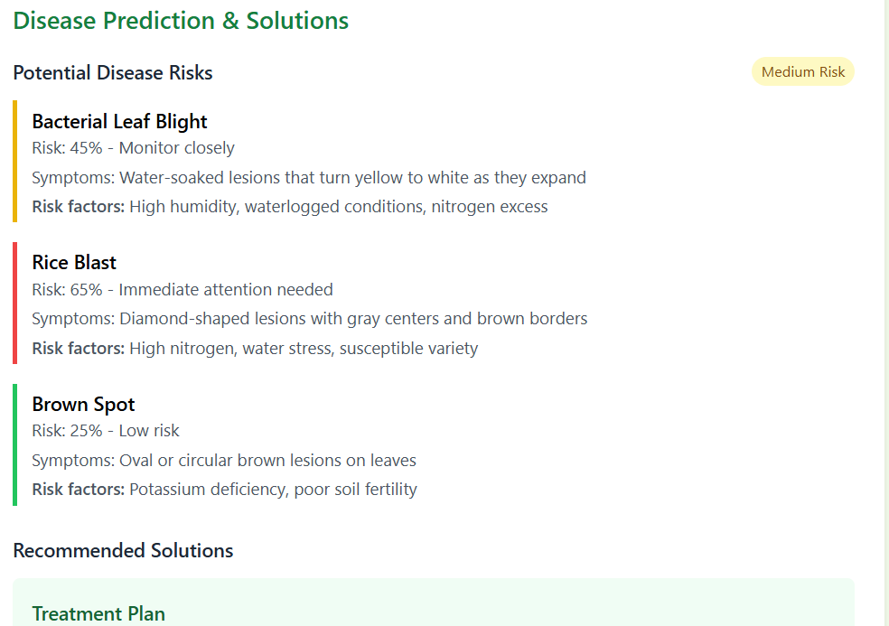

How It Works
Four simple steps to protect your crops and maximize yield

1
Data Input Collection
CropGuard begins by collecting essential inputs from farmers such as crop type, district, and soil parameters like pH level, moisture content, NPK values, organic matter, and soil texture.
Analyze Now

2
Disease & Growth Analysis
The system analyzes data using predefined logic to check if current soil and weather conditions are suitable for crop growth or likely to trigger diseases.
Analyze Now
3
Risk Alerts & Diagnosis
CropGuard generates a complete diagnosis showing risk level (High/Medium/Low), identifies diseases or deficiencies, and displays key symptoms or warning signs.
Analyze Now
4
Solution & Recommendation
Finally, the system suggests personalized solutions with specific agro-products, proper dosage, application methods, treatment schedules, and prevention tips.
Analyze Now